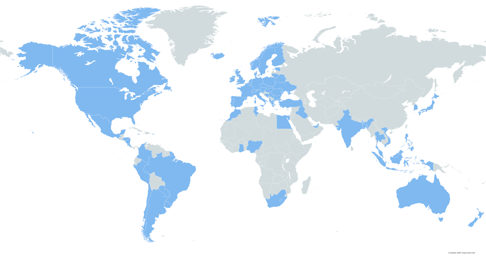

My name is , , , , trying to tell stories with the music
The music genre and style I do, is , and
Each song represents a vital experience, a thought, a dream, a sense,... and share it is something maravillous
When you listen a song, close your eyes, breath deeply, hear it with the heart and fly inside your senses
Music is math, it is life, and it reminds you that you are alive
Discography
I hope that you enjoy with all my songs
Available on , , and
May 29, 2023
Number of Songs:
Cosmos is the created heavenly bodies (sun, moon, wandering stars, and fixed stars), and all that is contained on it
We are all part of it, we are all Cosmos
May 15, 2023
Number of Songs:
When things go wrong, we sometimes feel alone and empty. We believe that nothing stops us below, and we only see an endless precipice, but if we raise our heads and look up, we will see everything differently
February 17, 2023
Number of Songs:
In honour of , a Benedictine monk from the Abbey of Santo Domingo de Silos (Burgos - Spain)
November 14, 2022
Number of Songs:
This is a song to rise up with energy and take the world around you with both hands
October 10, 2022
Number of Songs:
After the pandemic, many people have a second chance to improve the world
Take a deep breath, go outside and seize the opportunity
September 12, 2022
Number of Songs:
My first song with which I fulfill a dream come true
Countries from where my music is heard on
Biography
I was born in on April 1, 1973
My interest in music has been since I can remember
My sister, almost 6 years older than me, received piano lessons at home from a private teacher
There were many times that I stayed behind the door listening to the classes that my sister received
I still remember today the metronome, with its harmonic ticking
But for me, having a piano at home was a unique opportunity even if the classes weren't for me, so whenever I could, I would sit in front of the piano and give free rein to my imagination playing what came out of me
I lived in the center of Madrid, in one of those small streets in Madrid de los Austrias, and I loved opening the balcony windows so that the sound would come out and hit the walls of the house across the street, generating a sound similar to reverberation
I don't think that many of my neighbors thought that was the best idea, but I admit that I loved it
With the passage of time and little by little, I was practicing on my own, expanding certain notions that, without hiding it, have always been quite basic
When I was between 11 and 12 years old, I realized that I did not remember exactly many of the things that I made up and that had sounded good to my ears a few days ago, so I decided to start writting many of the things that were flowing
During my youth student stage, exams, studies, obligations and other distractions made me reduce the hours I spent in front of the piano, but that was not an impediment for me at the age of 16 to buy my first synthesizer, a Korg X5D that I still have, with love
However, music became almost residual for me due to other obligations and different goals over the years
I finished school, started University, and started studying Management Computer Engineering
I finished my studies, I started working, I published my first website in 1995, being at that time one of the references in the entire Spanish-speaking world on programming, I wrote a dozen technical books and around a hundred articles for magazines and Microsoft awarded as MVP for almost 17 years in a row, but although I was very happy with what I had achieved, music was still in my memory
At one point (between 2020 and 2021), I made the determination to return to music without abandoning my profession, but with a key objective for myself
To try to turn into songs those notes that I took since I was 11 years old, together with some other creations that today flow from my interior as then, almost 40 years ago
I have no personal claim beyond that of leaving a certain legacy, of those compositions and creations that live inside of me and that I want to share with whoever wants to listen to them